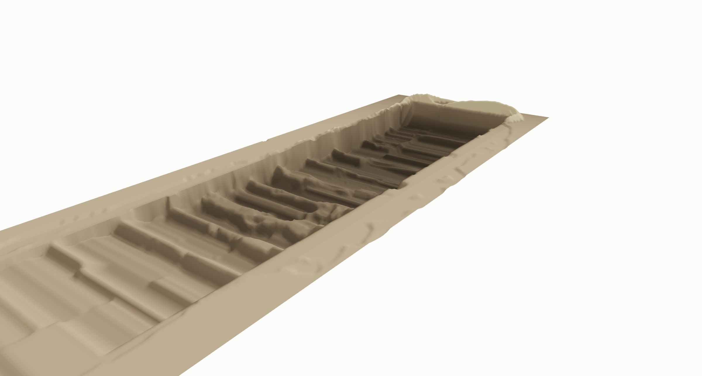
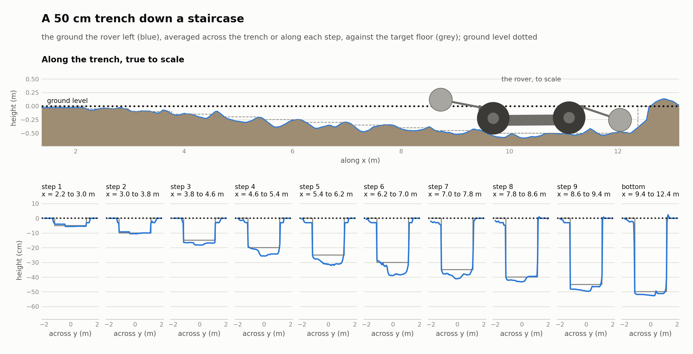
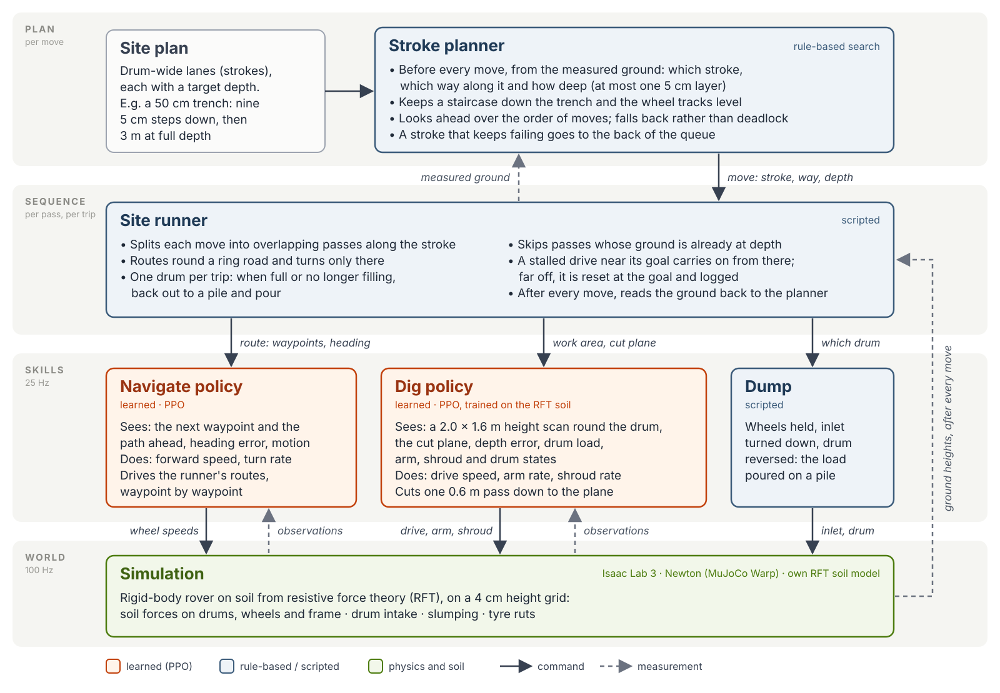
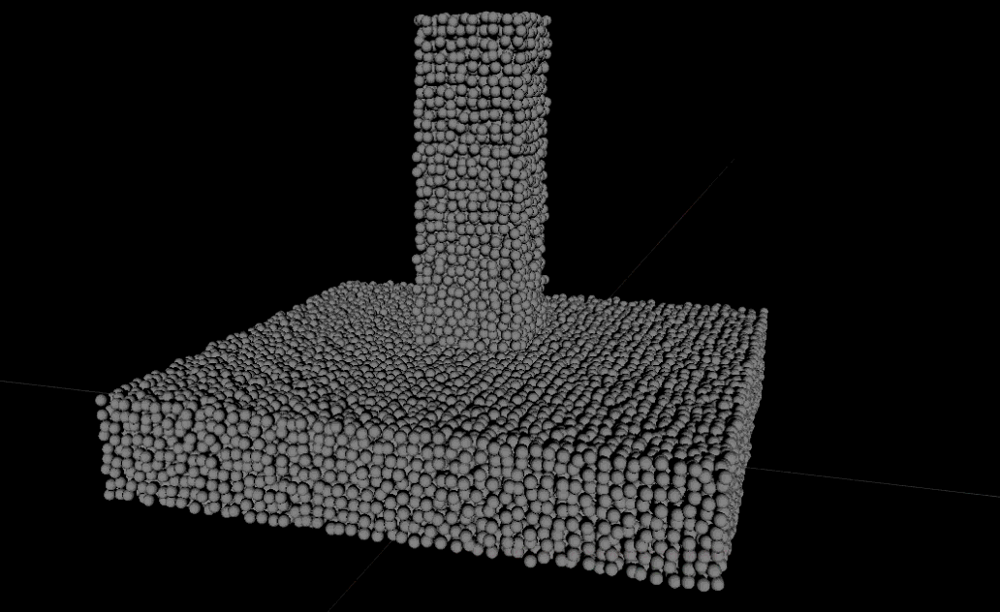

Lunar Rover Excavation
A lunar base needs trenches and level ground, dug by machines that cannot be driven by hand from Earth. I built a simulated excavation rover that takes a target shape and digs it end to end: a planner decides what to cut next from the measured ground, and two policies trained with reinforcement learning drive the rover and work its digging drum.
A 50 cm trench, dug end to end
The rover is a two-drum regolith excavator inspired by NASA's RASSOR. Its target here is a trench 10.2 m long and 2.4 m wide that steps down 5 cm every 0.8 m to a 3 m floor at 50 cm, nearly the rover's own 0.6 m height. It chose every cut, drive and dump itself, over [N] simulated hours.
50 cm is the deeper of the two jobs a polar base needs: clearing a landing pad means stripping 30–50 cm of loose material so the plume cannot throw it, and polar ice sits under up to 40 cm of dry regolith. It goes down as a staircase because the rover drives to the face and back out to dump — a vertical-walled pit strands a 0.6 m machine on the rim.


How it works
The work is split by timescale. Before every cut, an excavation planner reads the measured ground and picks which lane to cut next, which way along it and how deep, keeping a staircase the rover can drive down and looking ahead so the whole site can be finished. A task sequencer turns that cut into overlapping dig passes, routes around the site and trips to a spoil pile. Two learned skills do the physical work: a navigation policy drives the routes and a dig policy cuts each pass. After every cut the ground is measured again and the planner picks the next one.

The dig skill: a policy trained with PPO
The dig policy is given a cut plane, 3 to 8 cm deep and sloping up to about 6°, and has to bring the ground down to it in one 0.6 m pass. It sees a 2.0 × 1.6 m height scan around the drum, how far the drum is from the plane, how full the drum is and the state of its arm and shroud, and it sets the drive speed, the arm and the shroud. The drum can only take soil in so fast, so driving faster pushes soil ahead instead of loading it. [One sentence, in your words, on what the policy does about that.]
Two soil models: one fast enough to train on, one to check against
Reinforcement learning needs millions of steps, and particle soil is too slow for that: one rover on MPM soil runs at [0.03–0.06]× real time. So the policies train on a soil model I wrote from resistive force theory (RFT). The ground is a 4 cm height grid, and the force on every patch of drum, wheel and frame comes from its depth and its direction of motion; the drum takes soil in at a limited rate and loose soil slumps to its angle of repose. Its force scale is calibrated so the drum meets about the same cutting force as on MPM soil. One rover runs at about real time, and [N] run in parallel for training.
To check that the dig policy is not just exploiting the simpler soil, I ran it, unchanged, on particle soil it never saw: Newton's implicit MPM, 240,000 particles 2 cm apart. It finishes the same 5 cm pass, about 1.7× slower: 19 s against 11 s.
The drive skill: navigation
Navigation is split in two parts. A cost-map planner computes a cost-to-goal field over the terrain heights at the start of each episode, and a reinforcement learning policy, trained with PPO, follows the path traced from that field by commanding wheel speed and steering.
This policy was first tested on six hand-built courses, each built around one kind of obstacle.
The same policy on randomly generated terrain, with a new start and goal in each episode. The green markers are only visual markers and cannot physically interact with the rover. The terrain is not flat, as it has some small undulations, and obstacles like craters and boulders.
How it started: a soil simulator from scratch
I first wrote a material point method (MPM) solver on the NVIDIA Warp API, which compiles Python kernels down to CUDA. Soil is carried by particles and scattered onto a grid each step; the grid is updated, the particles are updated from it, and the grid is reset for the next step. Below, a looser, less cohesive soil settles under gravity on top of a denser block.

A soil solver alone cannot simulate a rover, so I built a Python interface joining the Warp solver to NVIDIA PhysX, with contact forces passing both ways: when a body pushes on the soil, the soil pushes back on the body.
When NVIDIA released Newton, with GPU physics and its own implicit MPM solver, I moved the codebase onto it. A simple vehicle trained to drive over its soil was the first check that the reinforcement learning pipeline worked end to end.
Limitations and next steps
Everything here is in simulation, and neither soil model has been checked against real regolith; the RFT forces are calibrated to MPM, not to measurements. [How the dig policy falls short today, for example how often a pass meets the shape tolerance.] [How often the trench run had to put the rover back on its route after a drive stalled.] Next: [what you would study, tied to the research you want to do in a PhD].